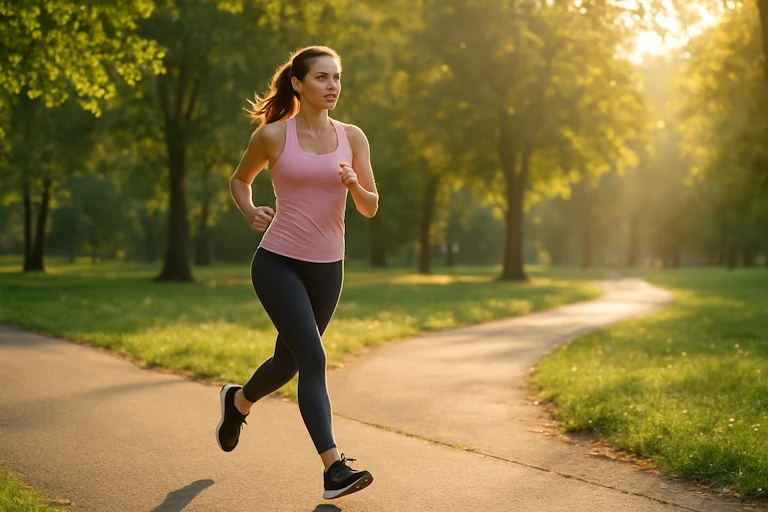

Voeding is de basis
Gezonde voeding levert energie, ondersteunt je immuunsysteem en zorgt voor een goed humeur. Focus op verse groenten, fruit, volkorenproducten en voldoende water.
- Eet gevarieerd en kleurrijk
- Beperk toegevoegde suikers
- Drink minstens 1,5 liter water per dag

Beweegtip van de week
Wissel eens de lift in voor de trap, of parkeer wat verder om extra stappen te zetten. Kleine gewoontes leiden tot groot effect.
Blijf in beweging
Regelmatige lichaamsbeweging verlaagt stress, versterkt spieren en verbetert je concentratie. Kies een activiteit die je leuk vindt en bouw het rustig op.

Mentale gezondheid

Ontspan
Neem regelmatig tijd voor jezelf. Een korte pauze vermindert stress en verhoogt focus.
Slaap goed
Een goede nachtrust bevordert herstel en mentale veerkracht.

Ga naar buiten
Frisse lucht en natuur verbeteren je stemming en energiepeil.
Dagelijkse gewoontes
Een overzicht van gezonde dagelijkse gewoontes en hun voordelen.
| Gewoonte | Voordeel | Aanbevolen frequentie |
|---|---|---|
| 8 glazen water drinken | Hydratatie en energie | Dagelijks |
| 30 minuten wandelen | Betere conditie | Minstens 5x/week |
| Voldoende slaap | Mentale focus | Elke nacht |